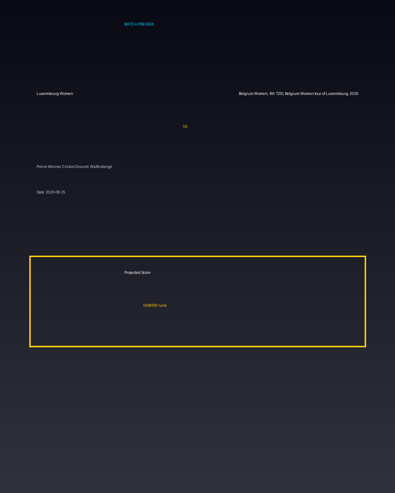

Luxembourg Women vs Belgium Women, 4th T20I, Belgium Women tour of Luxembourg, 2026
Date: 2026-08-25
Venue: Pierre Werner Cricket Ground, Walferdange


Form Guide
Luxembourg Women: 🟩 🟥 🟩 🟩 🟥
Belgium Women, 4th T20I, Belgium Women tour of Luxembourg, 2026: 🟥 🟩 🟥 🟥 🟩
Pitch Report
Balanced wicket with moderate scoring conditions.
Projected Score
150–190 runs
Key Players
- Luxembourg Women Key Batter — Batsman
- Luxembourg Women Strike Bowler — Bowler
- Belgium Women, 4th T20I, Belgium Women tour of Luxembourg, 2026 Key Batter — Batsman
- Belgium Women, 4th T20I, Belgium Women tour of Luxembourg, 2026 Strike Bowler — Bowler
Advanced Win Probability
Luxembourg Women: 64.3%
Belgium Women, 4th T20I, Belgium Women tour of Luxembourg, 2026: 35.7%
AI Match Prediction
Based on venue conditions, a projected scoring range of 150–190 runs, recent form (with Luxembourg Women appearing slightly stronger), and the pitch profile ('Balanced wicket with moderate scoring conditions.'), this matchup appears to present Luxembourg Women entering as clear favorites. Early momentum and top-order execution will likely determine the winner.
